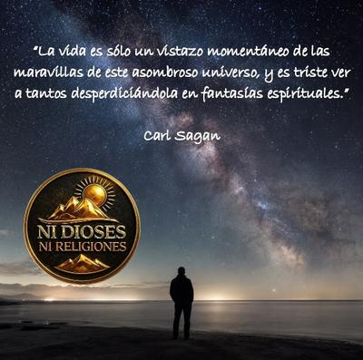

Hay una pregunta que ha acompañado al ser humano desde que tomó conciencia de sí mismo: ¿Qué ocurre cuando morimos? Curiosamente, nadie suele preguntarse qué ocurre cuando muere una mascota, un pájaro o una mariposa, porque asumimos naturalmente que simplemente dejan de existir. Sin embargo, cuando pensamos en nuestra propia muerte, nos cuesta aceptar que quizá nuestro destino sea el mismo: el fin definitivo de la vida, la conciencia y la existencia. Y precisamente esa dificultad emocional ha llevado a innumerables culturas a crear dioses, almas inmortales, paraísos y mundos sobrenaturales.


La razón es comprensible. La idea de desaparecer para siempre produce angustia, miedo y vértigo existencial. Por eso las religiones han ofrecido históricamente relatos reconfortantes: cielos eternos, reencarnaciones, espíritus inmortales, o dimensiones sobrenaturales donde supuestamente continuaría nuestro «verdadero yo». En el fondo, son creencias que funcionan como mecanismos psicológicos destinados a suavizar el temor a la muerte.
En Occidente, por ejemplo, el cristianismo ha enseñado durante siglos que la muerte no es realmente el final, sino apenas una transición hacia una «vida eterna». Según esta visión, el ser humano no moriría realmente, sino que abandonaría el cuerpo para continuar existiendo en otro plano. El ateísmo, en cambio, adopta una postura mucho más práctica y realista: la muerte es exactamente lo que parece ser, el final de la vida y la existencia. El regreso a donde estábamos antes de nacer; la no existencia.
Desde la perspectiva atea, los seres humanos no poseemos ningún privilegio cósmico especial. Somos simplemente organismos biológicos surgidos del mismo proceso evolutivo que produjo bacterias, árboles, aves, insectos y mamíferos. Nacemos, crecemos, nos desarrollamos y finalmente morimos. La naturaleza no ha reservado para nuestra especie ningún destino especial, y mucho menos sobrenatural.
Sin embargo, comprendemos que esto no es fácil de aceptar. Como seres conscientes, desarrollamos una enorme resistencia emocional a admitir que nuestra mente depende completamente del cerebro, y que cuando éste deja de funcionar, desaparece también aquello que llamamos «yo». El físico británico Stephen Hawking (1942-2018) lo expresó claramente:
«Yo considero al cerebro como una computadora que dejará de funcionar cuando fallen sus componentes. No existe el Cielo o vida después de la muerte para las computadoras que dejan de funcionar. Se trata de un cuento de hadas para la gente que le tiene miedo a la oscuridad.»[1]
Desde esta perspectiva, la mente no es una entidad mágica o sobrenatural, sino el resultado de complejos procesos físicos y biológicos. Cuando esos procesos terminan, termina también nuestra experiencia consciente.
Aunque muchas personas consideran deprimente esta idea, para numerosos ateos ocurre lo contrario. Aceptar que esta vida es la única que tendremos, puede hacer que cada instante adquiera un valor muchísimo mayor. El creyente puede pensar que su verdadera existencia comenzará después de morir; el ateo, en cambio, comprende que el aquí y el ahora son irrepetibles. Cada abrazo, conversación, emoción o experiencia, forman parte de algo único que jamás volverá a repetirse. Y precisamente porque la vida es limitada, se vuelve preciosa.
Muchos creyentes preguntan: «Si después de la muerte no hay nada, entonces ¿cuál es el sentido de la vida?». Pero esa pregunta parte del supuesto de que el universo tendría la obligación de proporcionarnos un propósito universal y eterno. Y la naturaleza no funciona así. El cosmos definitivamente no está interesado en nuestras necesidades emocionales ni en nuestras aspiraciones personales. Es inmenso, indiferente y ajeno a nuestros deseos. Pero lejos de ser ésta una idea pesimista, puede más bien resultar liberadora, porque significa que somos nosotros quienes construimos significado.
El ateísmo no niega que nuestra vida pueda tener sentido; lo que cuestiona es que ese sentido tenga que provenir de una entidad sobrenatural. Cada individuo puede encontrar propósito en el amor, el conocimiento, la amistad, la ciencia, el arte, la familia, la creatividad, o simplemente en disfrutar la experiencia de existir. Y de hecho, el sentido más intenso de la vida surge precisamente cuando entendemos que nuestro tiempo es limitado. Valoramos más a las personas porque sabemos que no estarán aquí para siempre. Disfrutamos más los momentos felices, porque comprendemos que son pasajeros. La conciencia de nuestra fragilidad puede hacernos apreciar mucho más el simple hecho de estar vivos.
El biólogo evolutivo británico Richard Dawkins (n. en 1941), expresó esta idea de forma memorable en su libro Destejiendo el arcoíris:
«Todos vamos a morir, y eso nos hace afortunados. La mayoría de la gente no podrá morir, porque nunca será capaz de nacer. El número de personas que podría haber estado en mi lugar pero que nunca verá la luz del día, supera al número de granos de arena del Sahara. Esos fantasmas incluyen a poetas más grandes que Keats, a científicos más grandes que Newton. Lo sabemos porque las posibilidades de nuestro ADN son infinitamente más que el número de gente real. A pesar de estas pasmosas probabilidades, somos tú y yo, en nuestra simpleza, los que estamos aquí.»[2]
Esto convierte nuestra existencia en algo extraordinario, no porque seamos seres sobrenaturales, sino precisamente porque somos efímeros.
Para muchos ateos, ser conscientes de la muerte es también ser conscientes de la vida. Es comprender que esta experiencia individual que llamamos «yo», es temporal, frágil e irrepetible. Y eso puede volvernos más sensibles al presente y más responsables con el tiempo que tenemos.
Por supuesto, aceptar esta realidad no significa que los ateos no sufran ante la muerte. También sentimos tristeza por la pérdida de seres queridos, y miedo ante nuestra propia desaparición. Somos seres humanos. Pero preferimos enfrentar la realidad tal como es, antes que refugiarnos en creencias sin evidencia, únicamente porque resultan emocionalmente reconfortantes. Como dice el filósofo y matemático británico Bertrand Russell (1872-1970) en su obra Por qué no soy cristiano:
«Si algo es verdad, es verdad, y si no, no debes creerlo […] Me parece fundamentalmente deshonesto y dañino para la integridad intelectual, creer en algo sólo porque te beneficia, y no porque pienses que es verdad.»[3]
Porque desear intensamente algo no lo convierte en verdad. A lo largo de la historia, millones de personas han querido creer en la vida eterna, la justicia cósmica o la protección divina. Pero nuestros deseos no modifican la estructura del universo. La realidad no tiene obligación de adaptarse a nuestras necesidades psicológicas. Y quizá ahí reside una de las diferencias fundamentales entre el pensamiento religioso y el pensamiento ateo: mientras las religiones suelen ofrecer respuestas emocionalmente consoladoras, el ateísmo intenta aceptar honestamente lo que la evidencia muestra, incluso cuando desafía nuestras esperanzas y deseos más profundos.
Por eso, para muchos ateos, la conciencia de la muerte no destruye el valor de la vida; lo multiplica. Porque sabemos que este instante es único. Porque entendemos que nadie nos garantizó existir. Y porque precisamente el hecho de que todo termine algún día, convierte cada momento vivido en algo infinitamente más valioso.
[Godless Freeman]
Comentarios
Comments powered by Disqus